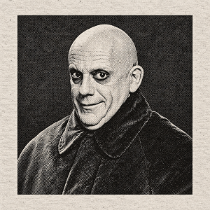

The strange, unusual and slightly entertaining. (AKA Happy Halloweens!)
Wednesday and Pugsey Addams
Masterminds or Just Children?
Well at least one of the Addam's children should be considered a mini Sherlock Holmes only Wednesday Addams has the personality of a old welsh man with the disgusting fondness for rat's pie. Her brother on the other hand, Pugsey, lacks a bit of braincells yet seems to shock to world with his suprising luck and high tolerence to pain, the normals are beginning to worry whether he will turn out like his Uncle Fester although without the intelligence in his equation of life.
Gomez and Morticia Addams
Love Galore of Gomez and Morticia Addams
Now this is a love that withstands realms. With a disturbing amount of PDA and affection, the normals often wonder how in the world did two equally strange individuals with surprisingly odd characteristics find each other in this lifetime. Author wonders the same thing. Yet despite the oddness and strangeness they both are surprisingly the model couple of the next 10 centuries, they somehow make all the normal woman envious for the attention of a man like Gomez. I on the other hand still find it all disgustingly disturbing. Eugh.

Fester Addams
WARNING! BEWARE OF FESTER!
Uncle Fester is I suppose the oddest from this lot of odd balls. It does not matter where he goes, an extra dose of extreme trouble always seems to follow him. If this man is in your radar, BEWARE FOR SWINGING AXES AND WILD ELECTRIC WIRES!! Unusual criminal events always follow him. Author says once again, beware.